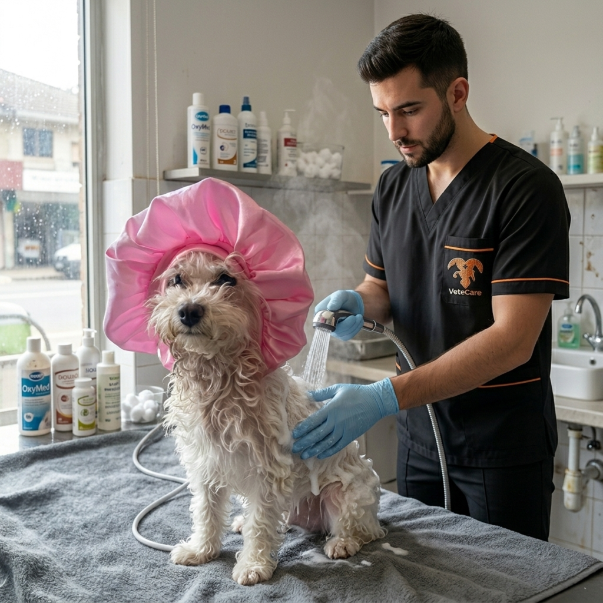

En VeteCare nos dedicamos con amor y profesionalismo al cuidado integral de tus mascotas. Somos un equipo comprometido con la salud y el bienestar de tus compañeros de vida, ofreciendo atención médica de alta calidad, calidez humana y la mejor tecnología para que estén siempre fuertes y sanos.
• Consulta Médica General: Revisión completa de signos vitales, diagnósticos y tratamientos personalizados.
• Vacunación y Desparasitación: Control estricto de cartillas médicas para mantener a tus mascotas protegidas.
• Cirugía y Quirófano: Procedimientos quirúrgicos seguros (como esterilizaciones) con monitoreo profesional.
• Estética y Peluquería: Baños medicados, corte de pelo según la raza, corte de uñas y consentimiento integral.
Lunes a Viernes: 8:00 AM a 7:00 PM | Sábados: 9:00 AM a 2:00 PM
* Contamos con atención de urgencias médicas disponible las 24 horas del día.
